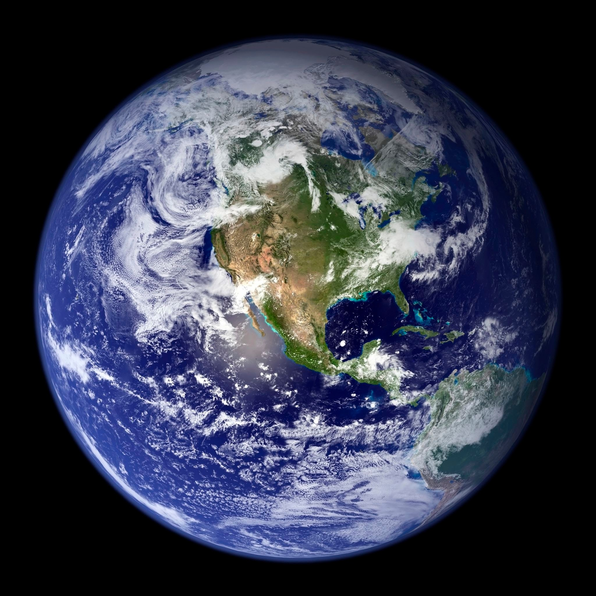
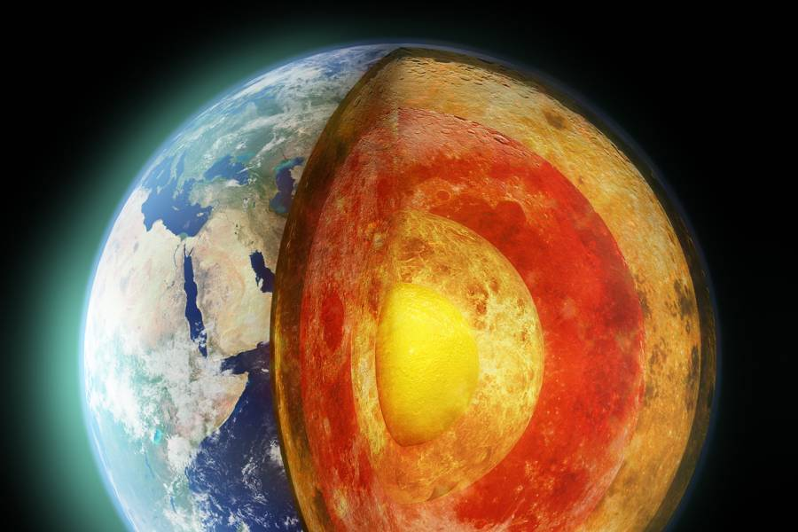

Earth is the third planet from the Sun and the only astronomical object known to harbor life. This is enabled by Earth being a water world, the only one in the Solar System sustaining liquid surface water. Almost all of Earth's water is contained in its global ocean, covering 70.8% of Earth's crust. The remaining 29.2% of Earth's crust is land, most of which is located in the form of continental landmasses within one hemisphere, Earth's land hemisphere. Most of Earth's land is somewhat humid and covered by vegetation, while large sheets of ice at Earth's polar deserts retain more water than Earth's groundwater, lakes, rivers and atmospheric water combined. Earth's crust consists of slowly moving tectonic plates, which interact to produce mountain ranges, volcanoes, and earthquakes. Earth has a liquid outer core that generates a magnetosphere capable of deflecting most of the destructive solar winds and cosmic radiation. Age: 4.543 billion years Mass: 5.972 × 10^24 kg Distance from Sun: 149.6 million km Radius: 6,371 km Gravity: 9.807 m/s² Surface area: 510.1 million km² Population: 7.888 billion (2021) World Bank
Earth's interior, like that of the other terrestrial planets, is divided into layers by their chemical or physical (rheological) properties. The outer layer is a chemically distinct silicate solid crust, which is underlain by a highly viscous solid mantle. The crust is separated from the mantle by the Mohorovičić discontinuity.[128] The thickness of the crust varies from about 6 kilometers (3.7 mi) under the oceans to 30–50 km (19–31 mi) for the continents. The crust and the cold, rigid, top of the upper mantle are collectively known as the lithosphere, which is divided into independently moving tectonic plates.
